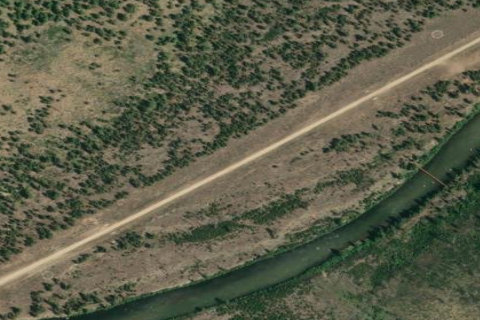

INDIAN CREEK USFS
S81 · ID

Aerial imagery source: Esri, Vantor, Earthstar Geographics, and the GIS User Community
| Identifier | S81 |
|---|---|
| State | ID |
| Runway length | 4,650 ft |
| Runway width | 40 ft |
| Surface | DIRT |
| Runway | 04/22 |
| Elevation | 4,718 ft |
| Ownership | public |
| CTAF | 122.9 |
| Coordinates | 44.76113888, -115.10736111 |
Notes
[idaho_itd] USFS Airfield [shortfield] Location Overview Indian Creek is a public airstrip located alongside the Middle Fork of the Salmon River, deep in the Frank Church-River of No Return Wilderness, accessible only by air, foot, horseback, or the river itself. The field covers about 37 acres and sits around 4,700 feet in elevation, with a single dirt runway. Camping & Recreation There are several good wilderness campsites between the airstrip and the river, though they come without amenities. A solar-powered outhouse sits near the boat ramp, and basic navigational aids like a windsock and segmented circle mark the field, along with a few tiedowns and potable water available outside the Forest Service guard station. The strip doubles as a put-in and take-out point for Middle Fork rafting trips — low water flows on the river force white-water rafters to launch near the airstrip, which drives up air traffic and makes Indian Creek one of Idaho's busiest backcountry strips. Notes & Warnings The runway is a 4,650 by 40-foot dirt surface, and pilots should expect the rough, unimproved conditions typical of Idaho backcountry strips — uneven ground and loose rock are common hazards. The Forest Service recommends that pilots departing up or down the canyon remain in the main canyon, and there is no winter maintenance, so the field is effectively unusable in snow season. Because it shares space with rafters, hikers, and occasional maintenance crews, it's worth checking current NOTAMs before flying in — the field has even seen closures for trail and berm work involving pack mules and equipment on the runway itself. History Indian Creek grew up alongside the broader network of primitive backcountry airstrips the U.S. Forest Service built and maintained throughout central Idaho's wilderness areas in the mid-20th century, originally to support fire suppression, guard station resupply, and access to remote mining and ranching operations along the Middle Fork of the Salmon. As recreational rafting and backcountry flying grew in popularity through the latter half of the century, strips like Indian Creek shifted toward serving pilots and river-runners rather than administrative traffic alone. Today it remains an active Forest Service guard station site and one of the signature stops in Idaho's celebrated backcountry airstrip culture, prized by pilots for its scenery and its front-row seat to Middle Fork rafting trips launching just steps from the runway.